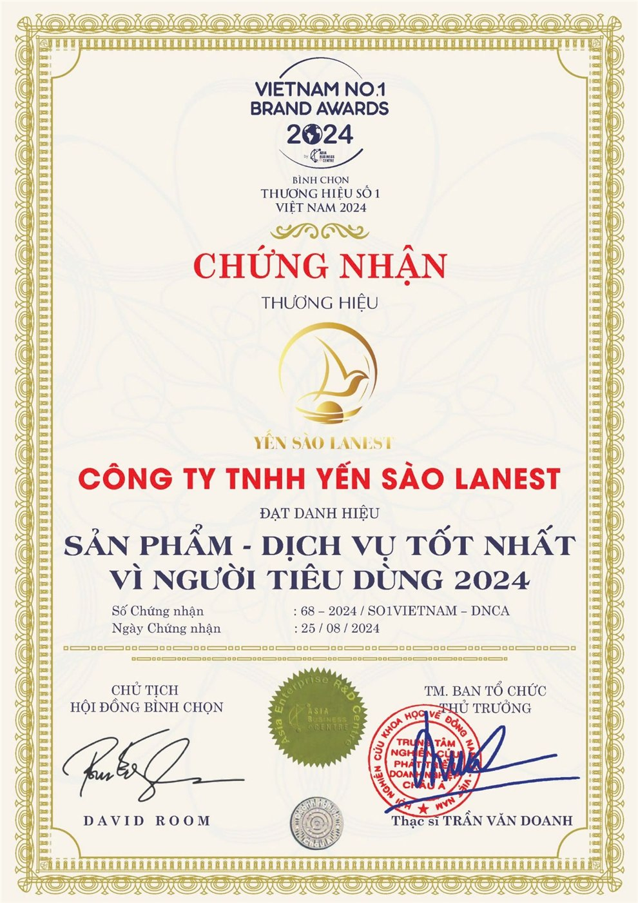

Chứng nhận thương hiệu
Sản phẩm – Dịch vụ tốt nhất vì người tiêu dùng 2024
Công Ty TNHH Yến Sào Lanest được vinh danh trong chương trình bình chọn Thương hiệu số 1 Việt Nam 2024 — Vietnam No.1 Brand Awards, ghi nhận nỗ lực của Lanest trong việc mang tới sản phẩm yến sào nguyên chất và dịch vụ tận tâm cho người tiêu dùng.
- Danh hiệu
- Sản phẩm – Dịch vụ tốt nhất vì người tiêu dùng 2024
- Chương trình
- Vietnam No.1 Brand Awards 2024
- Số chứng nhận
- 68 – 2024 / SO1VIETNAM – DNCA
- Ngày chứng nhận
- 25 / 08 / 2024